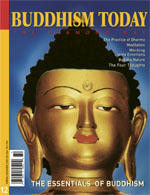

You can order this issue from the Diamond Way USA Dharma Shop.
Number 12 — Spring/Summer 2003
Focus: The Essentials of Buddhism
The Practice of Dharma
Rangjung Rigpe Dorje, 16th Karmapa
Calm Abiding and Insight
Kunzig Shamar Rinpoche
Meditation on Love and Compassion
Kunzig Shamar Rinpoche
Buddha Nature: The Intermediate State
Jamgon Kongtrol Rinpoche
Excerpts from The Path of Wisdom
The Four Thoughts
Jigme Rinpoche
The Four Foundational Practices
Lama Ole Nydahl
Working With Emotions
Gerd Boll
Buddhism: Goal, Method and Support
Tasso Kallianiotis
Buddhist Refuge
Brooke Webb
DEPARTMENTS
EDITORIAL
SPOTLIGHT: Kunzig Shamar Rinpoche
BOOK REVIEW: Colette DeDonato Do You Need a Guru?: M.Caplan
GLOSSARY: Basic Buddhist Terms
EVENTS: Marpa Course, Kassell, Phowa in Spain